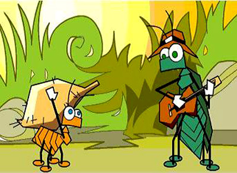
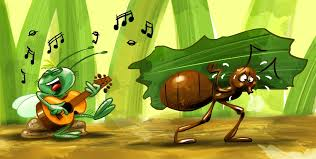
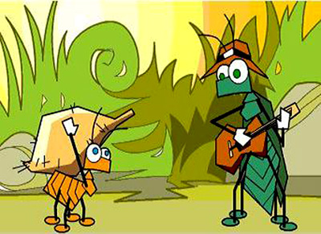

-
- Clique para inicia.

O canto das cigarras e resultado do movimento de suas asas. Mas as cigarras nao podem mover suas asas quando a umidade esta muito alta. Alta umidade e sinal de que esta prestes a chover.
Clique aqui para ir para a home.

Canto das cigarras: Se voce notar que as cigarras pararam de cantar logo apos um momento em que ela estavam fazendo uma algazarra, pode significar que a chuva esta por perto.
Clique aqui para ir ao formulario.
O canto da cigarra, ao contrario, nao tem beleza, muito menos riqueza. Mas e um canto de esperanca si si si si si si. a chuva se aproxima!
- Clique para inicia.
